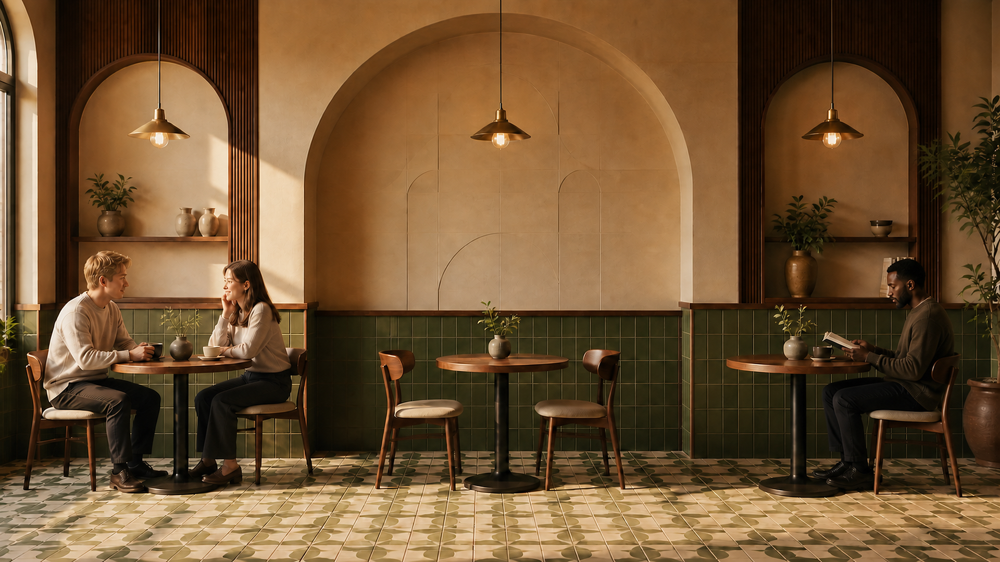
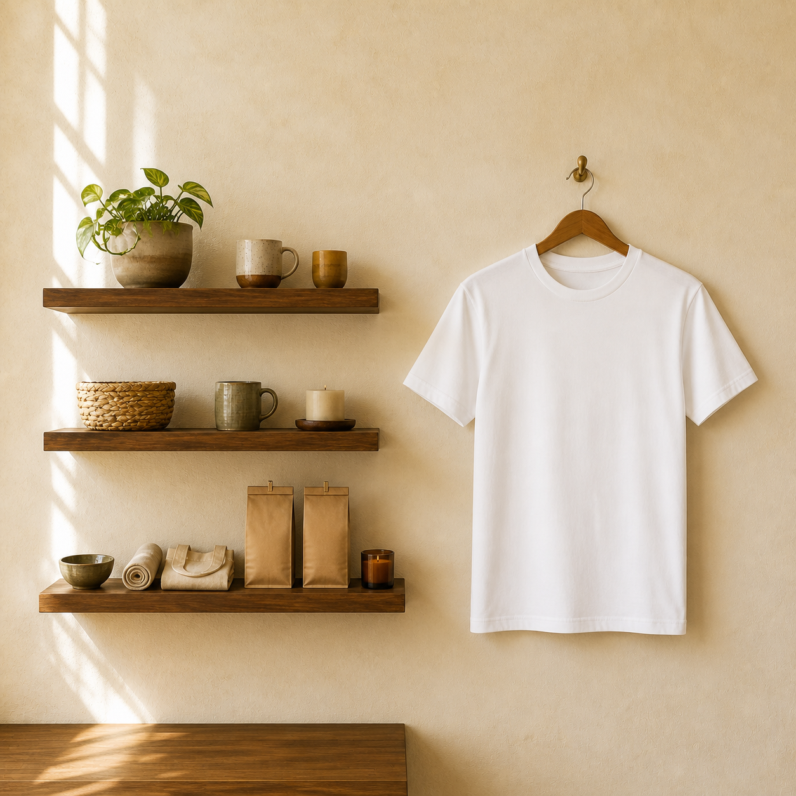

01 — Thoughtful sourcing
We choose ingredients and coffee with intention, prioritizing quality, responsible partnerships, and practices that respect the people behind every cup.

A community-first coffee house
Settle into a quiet corner, pull up to the table, or find somewhere in between. There's room here for focus, conversation, and simply being around others.
Find us
1234 Grand Ave.
San Diego, California
Mon–Fri, 7 a.m.–8 p.m.
Sat–Sun, 8 a.m.–5 p.m.
What guides us
Everything at Selah begins with intention—from the coffee we serve to the people we collaborate with and the space we create. Our values reflect our commitment to sourcing thoughtfully, nurturing a creative community, and making room for moments that matter.
We choose ingredients and coffee with intention, prioritizing quality, responsible partnerships, and practices that respect the people behind every cup.
We collaborate with local artists, makers, and small businesses—creating opportunities for their work to be experienced, appreciated, and supported.
Selah is designed as a place to slow down. From the atmosphere to the service, every detail makes room for reflection, conversation, and genuine connection.
The meaning behind our name
Selah is a Hebrew term woven throughout the Psalms. Often understood as a musical or reflective pause, it invites the listener to stop, breathe, and consider what has just been heard.
That same spirit guides our coffee house, a place to slow down, become present, and make room for the moment you're in.
Made here, with care
Our shelves are shaped by the artists and makers in our community. We partner with local creatives to offer handmade ceramics, textiles, prints, and everyday goods—each one thoughtfully made and chosen to bring a little more beauty to the daily ritual.
Every purchase celebrates independent craft and supports the people who make our community more creative.

Locally crafted goods